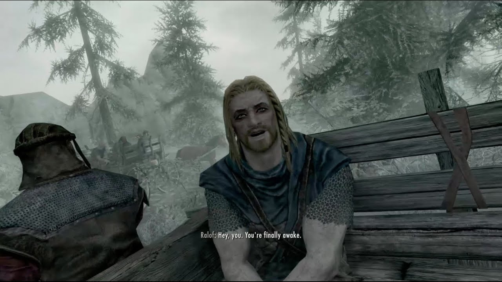
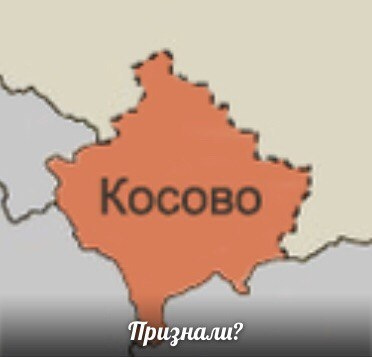

Juan
ЭТА ССЫЛКА ОТСЫЛАЕТ НА КОНЕЦ СТРАНИЦЫ
Любой текст без заголовка
Kuznetsova Anna
All work and no play makes Jack a dull boy. All work and no play makes Jack a dull boy. All work and no play makes Jack a dull boy. All work and no play makes Jack a dull boy.
«Чувство и чувствительность» — роман английской писательницы Джейн Остин. Первое изданное произведение писательницы было опубликовано в 1811 году. Сюжет романа выстроен вокруг любовных историй двух сестёр: сдержанной Элинор и романтичной Марианны. Условности английского общества, долг, честь, забота о родственниках и любовные переживания описаны Джейн Остин с присущим ей юмором в лёгком, ироничном стиле.
Kuznetsova Anna
12=1
22=4
32=9
42=16
52=25
62=36
72=49
82=64
92=81
102=100
112=121
122=144
132=169
142=196
152=225
162=256
172=289
182=324
192=361
202=400
Первый абзац с отступом
Второй абзац с увеличенным отступом
Над этим текстом есть горизонтальная линия.
Отформатированный текст.
"Не будем слишком обольщаться нашими победами над природой. За каждую такую победу она мстит нам."
Ф.Энгельс
Много говорить о себе — тоже способ себя скрывать.
Ф.Ницше
От кого: Ковалёв Сергей Петрович
Откуда: Ул.Арбат, д.4, кв.2, г.Москва
Кому: Михайлов Сергей Валентинович
Куда: Ул.Бориса Пастернака, д.11, кв.18
От кого: Быстров Николай Викторович
Откуда: Ул.Вавилова, д.4, кв.2, г.Москва
Кому: Борисов Владимир Николаевич
Куда: Ул. Шипиловская, д. 18, кв. 58
Поисковая система Yandex
Поисковая система Google
Поисковая система Yahoo
Поисковая система Mail.ru
Поисковая система Rambler
Эта ссылка откроется в новом окне №1.
Эта ссылка откроется в новом окне №2.
Эта ссылка откроется в новом окне №3.
Эта ссылка откроется в новом окне №4.
Эта ссылка откроется в новом окне №5.

Skyrim
Juan
Gromit
Fight club
Phrog
